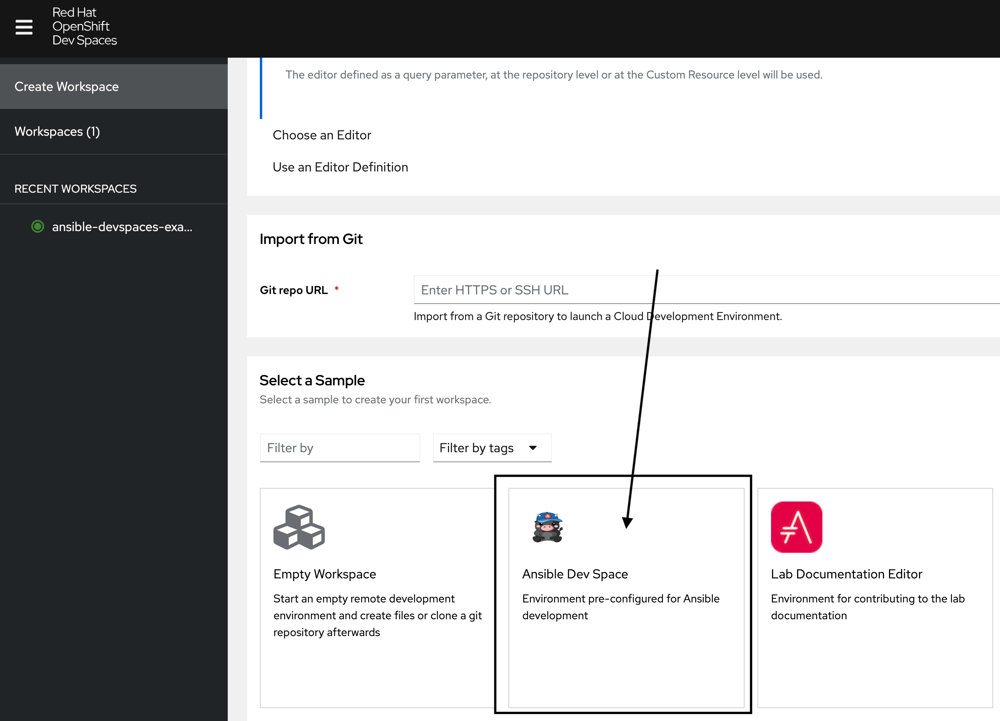
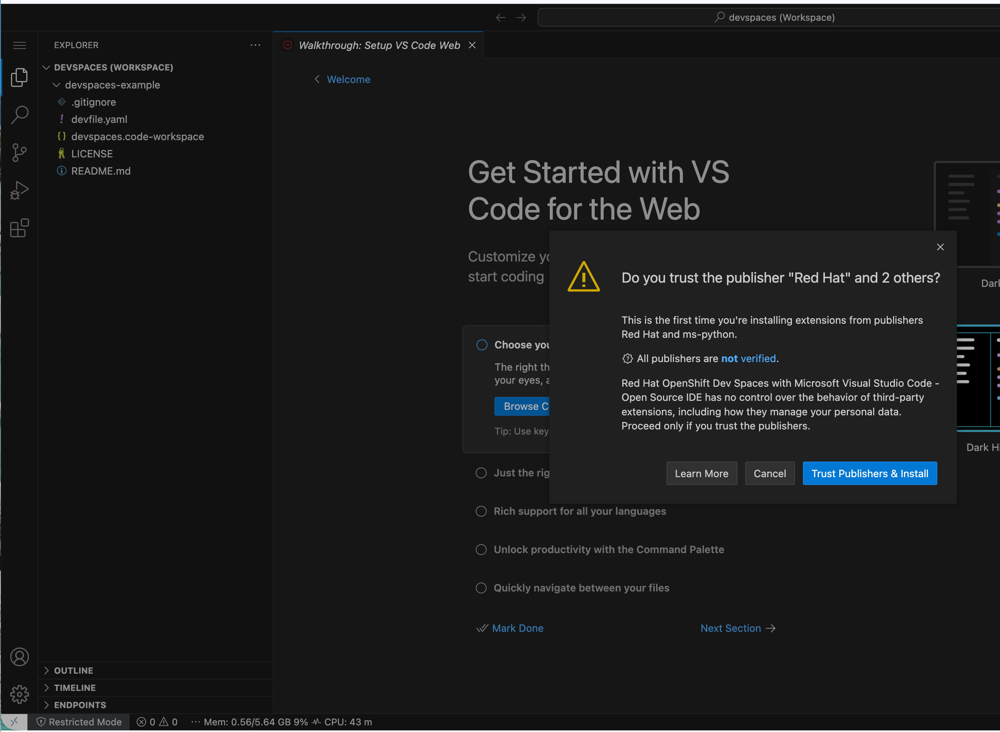
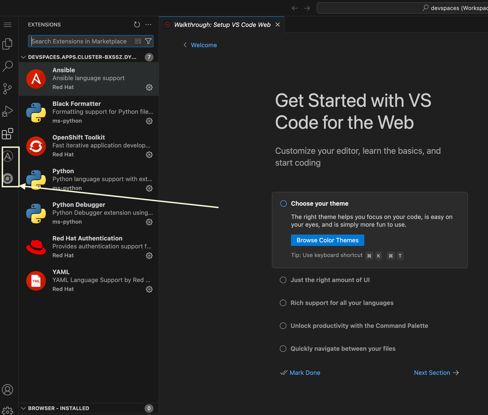
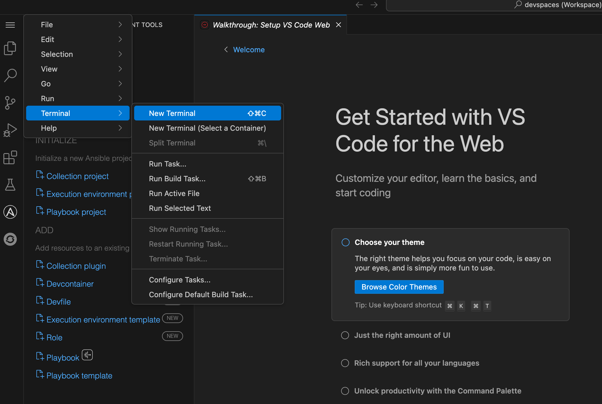

Automation Developer Experience
We will explore essential software development practices applied to automation development, including git workflows, secret scanning with pre-commit hooks, and comprehensive testing. This lab covers treating automation as code with proper linting, testing, and CI/CD practices, culminating in an overview of the Ansible Development Tools suite.
This lab walks through some of the basic software development practices as they apply to automation development. Finally, it concludes with an overview of the Ansible Development Tools. All automation files should be treated as code. This means scanning for code syntax and quality, checking that sensitive assets have not been exposed, and testing your code as much as possible before committing it. Once committed to git and published, consider it public and without effort will be there forever.
Learning Objectives
After completing this module, you will be able to:
-
Apply software development best practices to automation code
-
Use git effectively for version control in automation projects
-
Implement pre-commit hooks for code quality and security
-
Set up comprehensive testing frameworks for automation
-
Navigate the Ansible Development Tools ecosystem
Access the Dev Spaces console
Red Hat OpenShift Dev Spaces provides consistent, reproducible development environments based on the open-source project Eclipse Che.
It provides, by default, a Visual Studio Code (VS Code) environment as configured by a devfile, a YAML file that defines the entire workspace as code—including all necessary tools, runtimes, and project source. This file is used to instantly generate a pre-configured, containerized development environment, ensuring every developer on a team has an identical setup and solving the "it works on my machine" problem.
Launching Dev Spaces from OpenShift
-
Launch the Red Hat OpenShift Cluster from the RHDP login page.
-
Select the htpasswd_provider button and use the credentials provided in the RHDP login page to login to the OpenShift console.
-
Use the 9-block icon in the upper right to launch Red Hat OpenShift Dev Spaces directly from the OpenShift console header.

Dev Spaces Workspace
Launching a specific Dev Spaces Workspace
Once you have launched the OpenShift Dev Spaces console, use the following steps toe access your Ansible Dev Space workspace.
-
Login via OpenShift authentication using the same credentials as the OpenShift console
-
Select Allow selected permissions to authorize access and launch the console
-
Scroll down and select the workspace titled Ansible Dev Space

It will take a few minutes for the Dev Spaces instance to initialize. When it has loaded, a Visual Studio Code interface will appear. 
-
Click the Trust Publishers and Install button to trust the extension publishers that are included within the Dev Spaces workspace
-
Click the Yes, I trust the Authors button to trust the workspace authors (your instructors).
-
Wait a few minutes until the additional extension icons appear for Ansible and OpenShift on the left side.

Ansible and OpenShift Extensions
For this lab, we have have provided a .code-workspace configuration that included these extensions along with additional configurations to curate your development environment. See https://github.com/jeffcpullen/devspaces-example/blob/main/devspaces.code-workspace for the source of this workspace configuration.
-
Click on the Ansible extension icon to access the Ansible Development Tools extension (covered in a subsequent lab)

User Credentials in Workspaces
| This section describes a key feature of OpenShift Dev Spaces which enables secure access to git repositories. These details are shared for informational purposes only. No action is required to be performed in your Dev Spaces workspace. |
OpenShift Dev Spaces includes the capability to store user credentials for Git repositories, such as Personal Access Tokens (PATs), which can be applied to all your workspaces. This can be accomplished after logging into the Red Hat OpenShift Dev Spaces dashboard. Click on the top right drop down next to your username and icon and select, User Preferences. In the User Preferences page, select Personal Access Tokens and add a git Personal Access Token (PAT) associated with the desired Git provider.
For more information, see the Authenticating to a Git server from a Workspace.
Accessing a Terminal
The majority of the exercises in this lab will be performed using the Visual Studio Code terminal.
-
Open a new terminal by selecting the VS Code menu starting with the hamburger (3 horizontal lines) in the top left, then selecting Terminal → New Terminal

-
Explore the environment:
$ whoami
usercat /etc/redhat-release`
Red Hat Enterprise Linux release 9.7 (Plow)$ ansible --version
ansible [core 2.19.3]
config file = None
configured module search path = ['/home/user/.ansible/plugins/modules', '/usr/share/ansible/plugins/modules']
ansible python module location = /usr/local/lib/python3.11/site-packages/ansible
ansible collection location = /home/user/.ansible/collections:/usr/share/ansible/collections
executable location = /usr/local/bin/ansible
python version = 3.11.13 (main, Aug 21 2025, 00:00:00) [GCC 11.5.0 20240719 (Red Hat 11.5.0-11)] (/usr/bin/python3.11)
jinja version = 3.1.6
pyyaml version = 6.0.3 (with libyaml v0.2.5)Now you can start the practice from the next section.